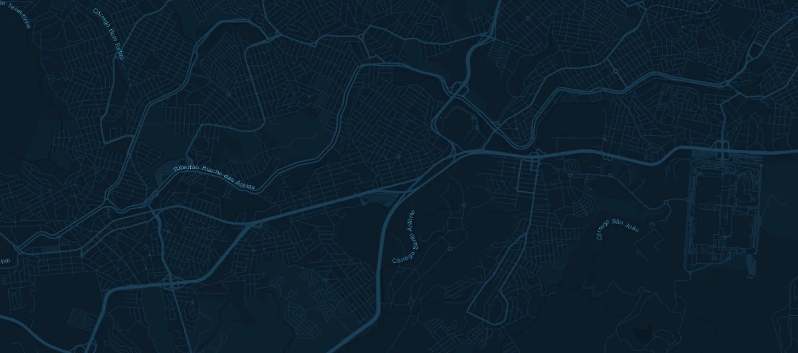

10 de 20
agências na Região Central
Análise geográfica da distribuição das agências na cidade, com mapa interativo e painel de BI.
As agências bancárias de Betim estão concentradas no centro? Como a rede se distribui entre as regiões e quais instituições atendem cada uma delas?
O acesso físico a agências bancárias influencia o dia a dia do morador, pois muitos serviços ainda dependem do atendimento presencial, e a localização das agências pode variar muito entre bairros e regiões de uma mesma cidade.
Este trabalho busca responder à pergunta central mapeando as agências de Betim, classificando-as por instituição, tipo (público, privado, cooperativa) e região, e medindo a distância de cada uma ao centro.
10 de 20
agências na Região Central
3,28 km
distância média ao centro
2 agências
no Eixo Rodoviário / Shopping Partage, a região com menos agências
20
7 instituições financeiras em 4 regiões de Betim, levantadas e georreferenciadas no trabalho.
3 modelos
Betim tem 11 agências privadas, 7 públicas e 2 de cooperativa de crédito. O morador escolhe o que combina com o seu perfil.
4 regiões
Há agências no Centro, em Alterosas, em Teresópolis/Imbiruçu (cerca de 8,8 km do centro) e no eixo do Shopping Partage.
10 agências
Metade da rede fica na Região Central, a menos de 400 m do ponto de referência, entre a Av. Governador Valadares e a Av. Amazonas.
19,4 e 23,1
Banco do Brasil (19,4) e Caixa (23,1) têm os menores índices de reclamações entre as instituições analisadas.
Índice nacional por instituição, não específico de Betim.
7 de 7
Todas as instituições combinam agência física, app, internet banking e central de atendimento. Várias também atendem por WhatsApp.
3 ferramentas
ArcGIS para a base geográfica, Power BI para a análise e este site para reunir tudo em um só lugar.
Explore
Filtre por instituição, região e tipo de banco e veja mapa, gráficos e indicadores.
O trabalho integra três ferramentas, cada uma com um papel definido.
Base geográfica. Agências georreferenciadas com latitude e longitude.
Modelagem e análise. Modelo estrela, medidas em DAX e dashboard de 2 páginas.
Reúne e apresenta o trabalho em um só lugar.
Modelo estrela: 1 tabela fato e 5 dimensões.
| Medida | O que calcula |
|---|---|
| Total de Agências | Contagem de agências (COUNTROWS) |
| Distância Média (km) | Média da distância das agências ao centro |
| Ativo Médio (R$ bi) | Média do ativo total por instituição |
| Reclamações Médias | Média do índice de reclamações por instituição |
Ativo e reclamações são calculados por instituição (e não por agência), para que bancos com mais agências não pesem mais na média. São dados nacionais por instituição, não específicos de Betim. O Sicoob Crediesmeraldas não possui esses dados.
Recriação navegável da página de visão geral do relatório, com os mesmos filtros, indicadores e gráficos. Explore por instituição, região e tipo de instituição, clique nos gráficos e navegue pelo mapa.
O relatório original exige login institucional no Power BI. A prévia é pública.
20 agências · 7 instituições · 4 regiões

Nenhuma agência com os filtros atuais.
Basemap © EsriMostrando todas as 20 agências
| Instituição | Agência | Endereço | Região | Distância | Reclamações (Bacen) |
|---|
Prévia construída com os mesmos dados do relatório acadêmico. O arquivo .pbix não é distribuído. O painel original está em um workspace restrito do Power BI e o botão “Abrir no Power BI” requer login institucional.